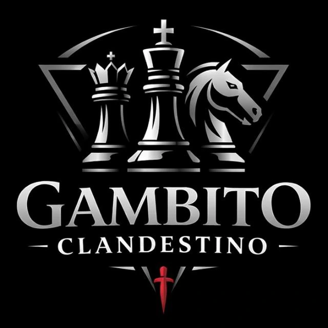

Gambito Clandestino

Club de ajedrez de la región del Bío-Bío
Quiénes somos
Agrupación de ajedrecistas que se congregan a disfrutar del estudio y el juego. Compartimos buena mesa, jolgorio y valores.
Las caras de los contrincantes se repetían e inventamos siempre como reunirnos a hablar de las estrategias de la vida.
Hoy nos etiquetamos. Tenemos un mensaje y un distintivo que va creando más historias en torno al Ajedrez.
Misión
Consolidarnos como un punto de encuentro que expanda la cultura del ajedrez, guiando la comprensión del juego desde el aprendizaje inicial hasta la maestría. Buscamos potenciar el desarrollo integral de nuestros miembros a través de la estrategia, cultivando siempre el respeto, la cordialidad y el sentido de pertenencia en cada partida.
Gambito Clandestino
Significado de nuestro escudo
Análisis semiológico del escudo.
-
Forma y estructura
Es un escudo simétrico, enmarcado por dos triángulos plateados que forman una «V» y una «V» invertida. Eso crea un efecto de rombo / escudo de armas medieval.
Connota protección, élite, clan cerrado. Es un sello, no un simple logo.
-
Iconos: las piezas
De izquierda a derecha: Dama, Rey y Caballo en blanco plata.
- Rey al centro y más grande. Es el eje. Lleva una cruz en la corona. Significante de poder absoluto, de autoridad y de lo sacro.
- Dama a la izquierda. Más pequeña, con corona. Connota poder táctico, la pieza más poderosa del juego.
- Caballo a la derecha. De perfil, mirando hacia afuera. Es la única pieza animada / animal. Connota astucia, salto inesperado, creatividad. Es la pieza del gambito.
Las tres juntas connotan jerarquía completa. No están jugando, están posando como tótem.
-
Cromatismo
- Fondo negro. Lo clandestino, lo nocturno, lo exclusivo, tablero.
- Blanco / plata en piezas y texto. Pureza, elegancia, piezas blancas. Contraste máximo con el negro = dualidad del ajedrez.
- Toque rojo sangre en la cruz inferior. Es el único punto de color. Es un punctum. Signo de jaque mate, de herida, de vida, de alerta. Rompe lo monocromático y le da carácter agresivo. Está invertida, apuntando hacia abajo como una daga o un peón caído.
-
Tipografía
- Gambito
- En mayúsculas, serif bold, tracking amplio. Fuerza, presencia, grito. Es el apellido del grupo.
- Clandestino
- En mayúsculas pequeñas, con guiones. Más discreto, como un subtítulo secreto, un susurro. El contraste de tamaños crea tensión: lo grande que se ve y lo oculto que es.
Síntesis del significado
El escudo comunica:
«Somos una orden secreta, elegante y estratégica».
El nombre es un oxímoron perfecto:
- Gambito
- Movimiento arriesgado y calculado.
- Clandestino
- Lo que no debe ser visto.
Es un logo que no quiere parecer deportivo, quiere parecer logia masónica de ajedrez.
Nobleza más rebeldía
Fundadores
Veinticinco piezas juegan en el tablero.
Actividades
Las cuatro últimas jugadas del club: tres torneos a la luz del día y una junta que nadie debería mencionar.
-
Junta clandestina
Junta seria
Definimos en una grata reunión, quienes somos y qué seremos.
-
Junta clandestina
Qué gran deguste
Manoteamos todos esos relojes, algo salió a la parrilla y el dueño de casa puso el color tinto. Misión cumplida.
-
Torneo
Copa Clandestina
Celebramos los 90 años del Club Ajedrez Concepción. Nos presentamos con un equipo y obtuvimos el lugar 11° de entre 22 equipos. Gran torneo. Algo puedes saber acá: Puclicación diario Concepción.
-
Torneo
Relámpago del Puerto
Elias y Patricio, dos de nuestros valientes, partieron a la batalla en donde triunfaron en el podio. ¡Felicitaciones!.
-
Torneo
Junta Cerrando Mayo
Otra de esas. Todo bien, todo exquisito, buenas partidas, buenas lecciones, música elixir, qué más pedir.